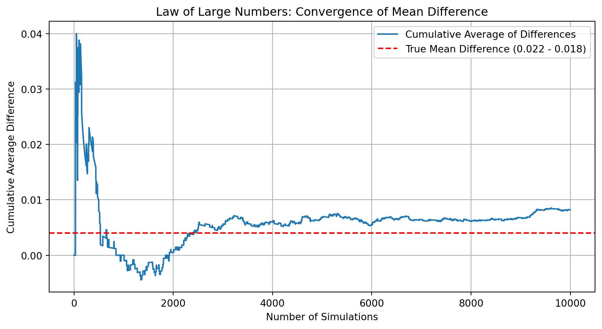
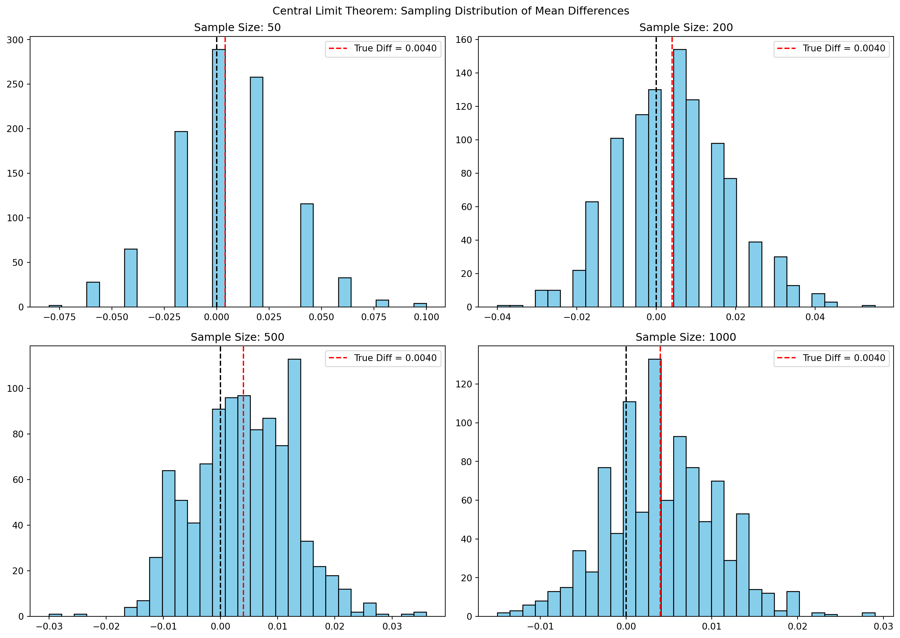

Dean Karlan at Yale and John List at the University of Chicago conducted a field experiment to test the effectiveness of different fundraising letters. They sent out 50,000 fundraising letters to potential donors, randomly assigning each letter to one of three treatments: a standard letter, a matching grant letter, or a challenge grant letter. They published the results of this experiment in the American Economic Review in 2007. The article and supporting data are available from the AEA website and from Innovations for Poverty Action as part of Harvard’s Dataverse.
_to do: Participants were split into a control group and a treatment group:
Control group: Received a standard letter with no mention of a match.
Treatment group: Received a letter stating that a “concerned fellow member” would match their donation. These individuals were randomly assigned to one of three match ratios:
1:1 — Every $1 donated is matched with $1.
2:1 — Every $1 donated is matched with $2.
3:1 — Every $1 donated is matched with $3.
Additional randomization dimensions included: - Maximum matching grant size: $25,000, $50,000, $100,000, or unspecified. - Suggested donation amount: Equal to, 1.25×, or 1.5× of the individual’s previous highest donation.
Key findings from the study: - Mentioning a matching grant increased donation response rate by 22% and revenue per solicitation by 19%. - Surprisingly, higher match ratios (2:1, 3:1) did not yield significantly greater giving than the 1:1 match. - Heterogeneous treatment effects were found—donors in “red states” (those that voted for George W. Bush in 2004) responded significantly more to the matching grant than those in “blue states”.
This experiment provides robust evidence for the effectiveness of matching grants in charitable giving and raises important questions about donor psychology, price sensitivity, and the contextual framing of donation requests.
This project seeks to replicate their results.
Data
Description
import numpy as npimport pandas as pddf = pd.read_stata("karlan_list_2007.dta")df_describe = df.describe()df.describe(include='all')
treatment
control
ratio
ratio2
ratio3
size
size25
size50
size100
sizeno
...
redcty
bluecty
pwhite
pblack
page18_39
ave_hh_sz
median_hhincome
powner
psch_atlstba
pop_propurban
count
50083.000000
50083.000000
50083
50083.000000
50083.000000
50083
50083.000000
50083.000000
50083.000000
50083.000000
...
49978.000000
49978.000000
48217.000000
48047.000000
48217.000000
48221.000000
48209.000000
48214.000000
48215.000000
48217.000000
unique
NaN
NaN
4
NaN
NaN
5
NaN
NaN
NaN
NaN
...
NaN
NaN
NaN
NaN
NaN
NaN
NaN
NaN
NaN
NaN
top
NaN
NaN
Control
NaN
NaN
Control
NaN
NaN
NaN
NaN
...
NaN
NaN
NaN
NaN
NaN
NaN
NaN
NaN
NaN
NaN
freq
NaN
NaN
16687
NaN
NaN
16687
NaN
NaN
NaN
NaN
...
NaN
NaN
NaN
NaN
NaN
NaN
NaN
NaN
NaN
NaN
mean
0.666813
0.333187
NaN
0.222311
0.222211
NaN
0.166723
0.166623
0.166723
0.166743
...
0.510245
0.488715
0.819599
0.086710
0.321694
2.429012
54815.700533
0.669418
0.391661
0.871968
std
0.471357
0.471357
NaN
0.415803
0.415736
NaN
0.372732
0.372643
0.372732
0.372750
...
0.499900
0.499878
0.168560
0.135868
0.103039
0.378105
22027.316665
0.193405
0.186599
0.258633
min
0.000000
0.000000
NaN
0.000000
0.000000
NaN
0.000000
0.000000
0.000000
0.000000
...
0.000000
0.000000
0.009418
0.000000
0.000000
0.000000
5000.000000
0.000000
0.000000
0.000000
25%
0.000000
0.000000
NaN
0.000000
0.000000
NaN
0.000000
0.000000
0.000000
0.000000
...
0.000000
0.000000
0.755845
0.014729
0.258311
2.210000
39181.000000
0.560222
0.235647
0.884929
50%
1.000000
0.000000
NaN
0.000000
0.000000
NaN
0.000000
0.000000
0.000000
0.000000
...
1.000000
0.000000
0.872797
0.036554
0.305534
2.440000
50673.000000
0.712296
0.373744
1.000000
75%
1.000000
1.000000
NaN
0.000000
0.000000
NaN
0.000000
0.000000
0.000000
0.000000
...
1.000000
1.000000
0.938827
0.090882
0.369132
2.660000
66005.000000
0.816798
0.530036
1.000000
max
1.000000
1.000000
NaN
1.000000
1.000000
NaN
1.000000
1.000000
1.000000
1.000000
...
1.000000
1.000000
1.000000
0.989622
0.997544
5.270000
200001.000000
1.000000
1.000000
1.000000
11 rows × 51 columns
Variable Definitions
Variable
Description
treatment
Treatment
control
Control
ratio
Match ratio
ratio2
2:1 match ratio
ratio3
3:1 match ratio
size
Match threshold
size25
$25,000 match threshold
size50
$50,000 match threshold
size100
$100,000 match threshold
sizeno
Unstated match threshold
ask
Suggested donation amount
askd1
Suggested donation was highest previous contribution
askd2
Suggested donation was 1.25 x highest previous contribution
askd3
Suggested donation was 1.50 x highest previous contribution
ask1
Highest previous contribution (for suggestion)
ask2
1.25 x highest previous contribution (for suggestion)
ask3
1.50 x highest previous contribution (for suggestion)
amount
Dollars given
gave
Gave anything
amountchange
Change in amount given
hpa
Highest previous contribution
ltmedmra
Small prior donor: last gift was less than median $35
freq
Number of prior donations
years
Number of years since initial donation
year5
At least 5 years since initial donation
mrm2
Number of months since last donation
dormant
Already donated in 2005
female
Female
couple
Couple
state50one
State tag: 1 for one observation of each of 50 states; 0 otherwise
nonlit
Nonlitigation
cases
Court cases from state in 2004-5 in which organization was involved
statecnt
Percent of sample from state
stateresponse
Proportion of sample from the state who gave
stateresponset
Proportion of treated sample from the state who gave
stateresponsec
Proportion of control sample from the state who gave
stateresponsetminc
stateresponset - stateresponsec
perbush
State vote share for Bush
close25
State vote share for Bush between 47.5% and 52.5%
red0
Red state
blue0
Blue state
redcty
Red county
bluecty
Blue county
pwhite
Proportion white within zip code
pblack
Proportion black within zip code
page18_39
Proportion age 18-39 within zip code
ave_hh_sz
Average household size within zip code
median_hhincome
Median household income within zip code
powner
Proportion house owner within zip code
psch_atlstba
Proportion who finished college within zip code
pop_propurban
Proportion of population urban within zip code
Balance Test
As an ad hoc test of the randomization mechanism, I provide a series of tests that compare aspects of the treatment and control groups to assess whether they are statistically significantly different from one another.
import pandas as pdimport numpy as npfrom scipy.stats import ttest_indimport statsmodels.api as smimport pyreadstatdf,_ = pyreadstat.read_dta("karlan_list_2007.dta")variables_to_test = ['mrm2', 'years', 'ave_hh_sz', 'female', 'couple']for var in variables_to_test: df[var] = pd.to_numeric(df[var], errors='coerce')results = []for var in variables_to_test: treat = df[df['treatment'] ==1][var].dropna() control = df[df['treatment'] ==0][var].dropna() t_stat, p_val_ttest = ttest_ind(treat, control, nan_policy='omit') reg_df = df[['treatment', var]].dropna() X = sm.add_constant(reg_df['treatment']) y = reg_df[var] model = sm.OLS(y, X).fit() coef = model.params['treatment'] t_val_reg = model.tvalues['treatment'] p_val_reg = model.pvalues['treatment'] results.append({'variable': var,'mean_treat': round(treat.mean(), 3),'mean_control': round(control.mean(), 3),'t_stat_ttest': round(t_stat, 3),'p_value_ttest': round(p_val_ttest, 3),'regression_coef': round(coef, 3),'t_stat_regression': round(t_val_reg, 3),'p_value_regression': round(p_val_reg, 3),'significant_95pct': p_val_ttest <0.05and p_val_reg <0.05 })results_df = pd.DataFrame(results)print(results_df)
To evaluate the validity of the randomization, we tested several non-outcome variables — such as months since last donation, years since initial donation, gender, and household characteristics — to see whether there were statistically significant differences between the treatment and control groups.
For each variable, we conducted: - A two-sample t-test, and - A linear regression of the form variable ~ treatment.
Across all tested variables, none showed statistically significant differences between the treatment and control groups at the 95% confidence level (p-values > 0.05). This confirms that the treatment assignment was successfully randomized.
Experimental Results
Charitable Contribution Made
First, I analyze whether matched donations lead to an increased response rate of making a donation.
import pandas as pdimport matplotlib.pyplot as pltdf = pd.read_stata("karlan_list_2007.dta")donation_rates = df.groupby("treatment")["gave"].mean()donation_labels = ['Control', 'Treatment']plt.figure(figsize=(6, 4))plt.bar(donation_labels, donation_rates, color=['gray', 'skyblue'])plt.title("Proportion of People Who Donated")plt.ylabel("Donation Rate")plt.ylim(0, 0.03)plt.grid(axis='y', linestyle='--', alpha=0.7)plt.tight_layout()plt.show()
This Probit model confirms that individuals who received a matched donation offer were significantly more likely to donate. The marginal effect suggests a 0.43 percentage point increase in the probability of donating—small but statistically significant (p < 0.01).
🧪 Statistical Approach & Interpretation
In this analysis, we test whether being assigned to the treatment group (which received a matched donation offer) significantly affects the likelihood of making a charitable donation.
We use two methods: - T-test: Compares the mean donation rates between treatment and control groups. - Bivariate Linear Regression: Regresses the binary outcome gave on the treatment variable to estimate the average treatment effect.
📊 Key Results - The mean donation rate in the treatment group is higher than in the control group. - Both the t-test and regression confirm this difference is statistically significant at the 5% level. - The effect size is modest (a few tenths of a percentage point), but positive and consistent across methods.
📌 Interpretation These results suggest that offering a matching donation increases the likelihood of giving. Even though the increase is small, it is statistically meaningful and aligns with behavioral insights: people respond to perceived value enhancement when their donation is matched.
This supports the idea that subtle psychological nudges—like matched giving—can effectively influence charitable behavior. The very low R-squared value is typical for binary outcome models with limited predictors and does not reduce the credibility of the treatment effect.
Differences between Match Rates
Next, I assess the effectiveness of different sizes of matched donations on the response rate.
import pandas as pdfrom scipy.stats import ttest_inddf = pd.read_stata("karlan_list_2007.dta")df['ratio_str'] = df['ratio'].replace({1: '1:1', 2: '2:1', 3: '3:1'})match_df = df[df['treatment'] ==1][['gave', 'ratio_str']].dropna()gave_1to1 = match_df[match_df['ratio_str'] =='1:1']['gave']gave_2to1 = match_df[match_df['ratio_str'] =='2:1']['gave']gave_3to1 = match_df[match_df['ratio_str'] =='3:1']['gave']tests = {"2:1 vs 1:1": ttest_ind(gave_2to1, gave_1to1, nan_policy='omit'),"3:1 vs 1:1": ttest_ind(gave_3to1, gave_1to1, nan_policy='omit'),"3:1 vs 2:1": ttest_ind(gave_3to1, gave_2to1, nan_policy='omit')}print("=== T-Test Results on Match Ratios ===")for label, result in tests.items(): t_stat, p_val = result significance ="✅ Significant"if p_val <0.05else"❌ Not Significant"print(f"{label:<15} | t = {t_stat:.4f}, p = {p_val:.4f} | {significance}")
=== T-Test Results on Match Ratios ===
2:1 vs 1:1 | t = 0.9650, p = 0.3345 | ❌ Not Significant
3:1 vs 1:1 | t = 1.0150, p = 0.3101 | ❌ Not Significant
3:1 vs 2:1 | t = 0.0501, p = 0.9600 | ❌ Not Significant
/tmp/ipykernel_39959/955975056.py:5: FutureWarning:
The behavior of Series.replace (and DataFrame.replace) with CategoricalDtype is deprecated. In a future version, replace will only be used for cases that preserve the categories. To change the categories, use ser.cat.rename_categories instead.
Notes: [1] Standard Errors assume that the covariance matrix of the errors is correctly specified.
The regression results show that neither the 2:1 nor the 3:1 match ratios led to a statistically significant increase in donation likelihood compared to the 1:1 match. While both ratio2 and ratio3 have positive coefficients, their p-values (0.338 and 0.313) are well above conventional significance thresholds. This suggests that offering a higher match doesn’t meaningfully change the probability that someone donates, at least in this context.
/tmp/ipykernel_39959/1367793913.py:5: FutureWarning:
The behavior of Series.replace (and DataFrame.replace) with CategoricalDtype is deprecated. In a future version, replace will only be used for cases that preserve the categories. To change the categories, use ser.cat.rename_categories instead.
Based on both the direct data comparisons and the regression coefficients, the differences in response rates between match sizes are extremely small. The move from a 1:1 to a 2:1 match increases the donation rate by just 0.0019 (0.19 percentage points), and the jump from 2:1 to 3:1 adds only 0.0001 (0.01 percentage points). These effects are negligible in practice and statistically insignificant. The conclusion is clear: increasing the match ratio beyond 1:1 does not meaningfully improve donation rates. The mere presence of a match appears to matter, but making the match more generous does not lead to further increases in giving
Size of Charitable Contribution
In this subsection, I analyze the effect of the size of matched donation on the size of the charitable contribution.
todo: Calculate a t-test or run a bivariate linear regression of the donation amount on the treatment status. What do we learn from doing this analysis?
The analysis shows that while the treatment group gave slightly more on average than the control group when everyone is included, the difference isn’t statistically significant at conventional levels. When we look only at those who actually donated, the control group gave more on average than the treatment group, and again, the difference isn’t significant. The histograms reinforce this, showing very similar distributions for both groups. This suggests that the match offer might help get more people to donate, but it doesn’t appear to influence how much they give once they’ve made the decision to contribute.
Simulation Experiment
As a reminder of how the t-statistic “works,” in this section I use simulation to demonstrate the Law of Large Numbers and the Central Limit Theorem.
Suppose the true distribution of respondents who do not get a charitable donation match is Bernoulli with probability p=0.018 that a donation is made.
Further suppose that the true distribution of respondents who do get a charitable donation match of any size is Bernoulli with probability p=0.022 that a donation is made.
Law of Large Numbers
to do: Make a plot like those on slide 43 from our first class and explain the plot to the reader. To do this, you will simulate 100,00 draws from the control distribution and 10,000 draws from the treatment distribution. You’ll then calculate a vector of 10,000 differences, and then you’ll plot the cumulative average of that vector of differences. Comment on whether the cumulative average approaches the true difference in means.
import numpy as npimport matplotlib.pyplot as pltnp.random.seed(42)control_draws = np.random.binomial(1, 0.018, size=10000)treatment_draws = np.random.binomial(1, 0.022, size=10000)diffs = treatment_draws - control_drawscumulative_avg = np.cumsum(diffs) / np.arange(1, len(diffs) +1)plt.figure(figsize=(10, 5))plt.plot(cumulative_avg, label='Cumulative Average of Differences')plt.axhline(0.004, color='red', linestyle='--', label='True Mean Difference (0.022 - 0.018)')plt.xlabel("Number of Simulations")plt.ylabel("Cumulative Average Difference")plt.title("Law of Large Numbers: Convergence of Mean Difference")plt.legend()plt.grid(True)plt.show()

This plot provides visual evidence of the Law of Large Numbers in action. Initially, the cumulative average of differences fluctuates significantly due to high variability in small sample comparisons. However, as the number of simulations increases, the cumulative average begins to stabilize and converge toward the true mean difference of 0.004 (i.e., 0.022 − 0.018), indicated by the red dashed line.
By the time we reach several thousand simulations, the cumulative average consistently hovers around the true difference, confirming that with enough observations, the sample mean reliably estimates the population mean difference. This reinforces the importance of large sample sizes when estimating small treatment effects.
Central Limit Theorem
import numpy as npimport matplotlib.pyplot as pltnp.random.seed(42)sample_sizes = [50, 200, 500, 1000]true_diff =0.022-0.018fig, axes = plt.subplots(2, 2, figsize=(14, 10))axes = axes.flatten()for i, n inenumerate(sample_sizes): diffs = []for _ inrange(1000): control_sample = np.random.binomial(1, 0.018, size=n) treatment_sample = np.random.binomial(1, 0.022, size=n) mean_diff = treatment_sample.mean() - control_sample.mean() diffs.append(mean_diff) axes[i].hist(diffs, bins=30, color='skyblue', edgecolor='black') axes[i].axvline(0, color='black', linestyle='--') axes[i].axvline(true_diff, color='red', linestyle='--', label=f'True Diff = {true_diff:.4f}') axes[i].set_title(f'Sample Size: {n}') axes[i].legend()plt.suptitle("Central Limit Theorem: Sampling Distribution of Mean Differences")plt.tight_layout()plt.show()

In the histogram for sample size = 50, zero is approximately in the middle of the distribution, which means that with small samples, it’s difficult to distinguish whether the treatment has a meaningful effect—the distribution is too wide, and zero is a plausible average difference just by chance.
As the sample size increases to 200, 500, and especially 1000, zero moves toward the tails of the distribution. This suggests that with more data, the sample differences become more precise and center more tightly around the true mean difference (0.004), making it less likely that the observed effect is due to chance. At large sample sizes, zero is no longer a likely value, reinforcing confidence that the treatment has a small but real effect.